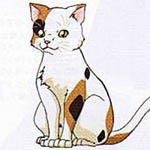

SOS Brigade (SOS 団) Minor Characters
Ryoko Asakura

Ryoko is in the same class as Haruhi Suzumiya and Kyon. She is gentle, intelligent and appears to genuinely care about the well being of her classmates. She is the class rep, has excellent grades and also excels at athletics. Taniguchi ranks her as one of his top three girls in the whole school beaucause of her combination of beauty and smarts. Ryoko was intially concerned about Haruhi when school started because Haruhi refused to mingle with the other students. When Kyon developed a relationship with Haruhi, Ryoko personally encouraged Kyon’s efforts. In reality, Ryoko is another artificial human interface like Yuki Nagato. She was sent by the Integrated Data Entity to observe Haruhi and to be Nagato’s back-up.
Tsuruya

Tsuruya is Mikuru’s friend and classmate. Tsuruya is a very energetic girl who always seems to be in a good mood. She is loud and speaks quite fast, but has a slight accent caused by the fang shaped tooth protruding from the top left of her mouth. Tsuruya’s most noticeable features are her ankle length hair and her long stretches of laughter (usually at Mikuru).
Kunikida

Kunikida is another of Kyon’s male friends in his class. He often hangs out with Taniguchi, but is the quieter one of the two. Kunikida has a more reserved personality but enjoys seeing beautiful girls in sexy cosplay costumes as much as the next guy.
Taniguchi

Taniguchi is one of Kyon’s male friends in his class. His favorite topic when conversing with Kyon appears to be girls and he also enjoys boasting about his expertise at picking up women. Taniguchi attended the same middle school as Haruhi and had warned Kyon about approaching her. Taniguchi’s knowledge about Haruhi’s past behaviour and dating habits hints that he may have dated her in middle school or had developed a crush for Haruhi.
Emiri Kimidori

Emiri first appeared in episode 7: Mysterique Sign. She is in the same class as Mikuru and Tsuruya. In an attempt to justify the club’s activities to the school, Kyon had put up posters which vaguely claim the SOS Brigade’s purpose was to help students with their problems. Emiri was the only student which responded. She appealed to Haruhi and the SOS Brigade to help find her boyfriend, the president of the Computer Society, since he was missing from school for days. Although it is not revealed in the first season of The Melancholy of Haruhi Suzumiya anime, Emiri Kimidori is actually a third artificial human along with Ryoko Asakura and Yuki Nagato. She is not really the computer club president’s girlfriend. Whether her actions in approaching Haruhi were planned by Nagato or independent is not known at this point.
Kyon's Sister

Kyon’s sister is full of energy and cute as a button. She and Kyon are on good terms and she enjoys tagging along with her brother where ever he goes, even participating in various SOS Brigade activities. She was the one that made up the “Kyon” nickname and began spreading it to his friends. In the Haruhi Suzumiya series, much like Kyon, she is not given a name and is only referred as Kyon’s little sister.
Computer Club President
He is the president of the school’s Computer Society club, and is not given a name in the series. He runs the computer club and has four other members, but his club room is unfortunately located next to the SOS Brigade club room. He first appeared in episode 3: The Melancholy of Haruhi Suzumiya II, where Haruhi blackmailed him into providing the SOS Brigade with a free computer and Internet connection. He appears to be the least geeky member of the Computer Society, but is still shy around pretty girls (which Haruhi happily exploits). In episode 7: Mysterique Sign, he became the victim of an Integrated Data Entity. In episode 11: The Day of Sagittarius, he and the other computer club members challenged the SOS Brigade in a rigged computer game match to try to win back their pilfered computer.
Shamisen
Shamisen is a stray cat which Kyon and his sister adopted after he was used in filming Haruhi’s movie. His ability to speak, like many other strange phenomenons that occurred during filming, was due to another one of Haruhi’s whims.